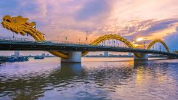
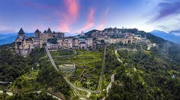
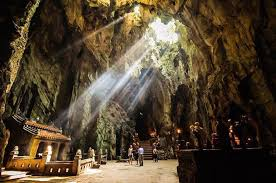
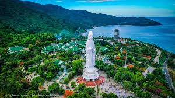
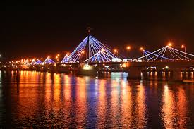
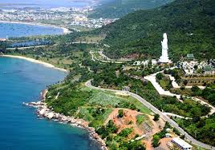
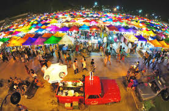
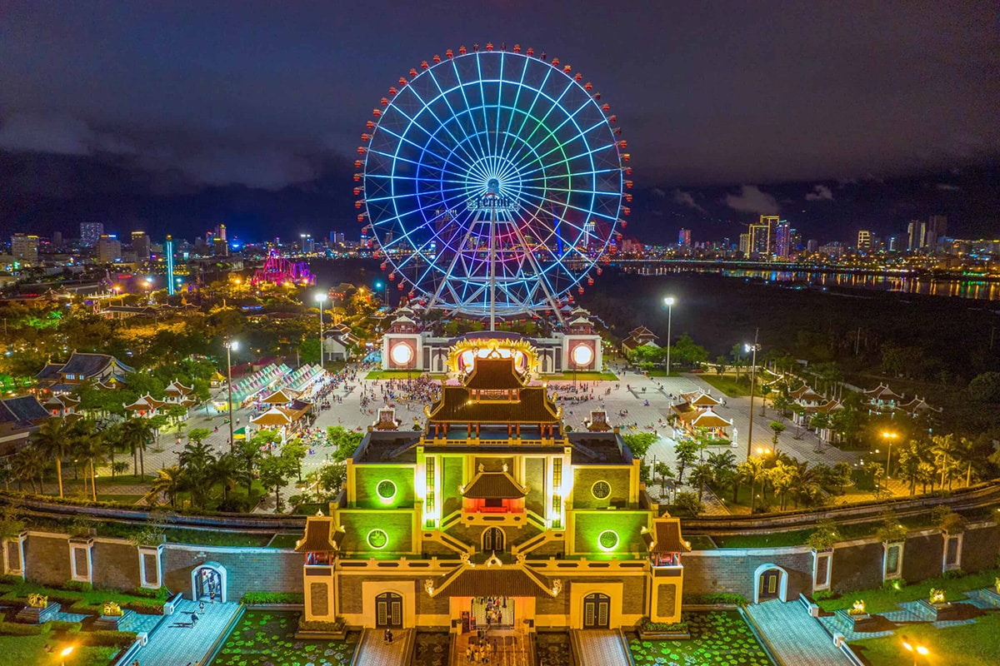

Chào mừng bạn đến với trang thông tin du lịch Đà Nẵng, nơi tổng hợp những điểm đến kỳ thú và hấp dẫn nhất tại thành phố biển miền Trung. Từ những bãi biển trong xanh trải dài, những cây cầu huyền thoại cho đến vùng núi non hùng vĩ, Đà Nẵng luôn biết cách làm say đắm lòng người bởi vẻ đẹp hài hòa giữa tự nhiên và sự hiện đại.
Hãy cùng chúng tôi điểm qua những địa danh biểu tượng mà bạn không thể bỏ lỡ khi đặt chân đến đây. Mỗi hình ảnh dưới đây đại diện cho một mảnh ghép đặc sắc, tạo nên bức tranh toàn cảnh về một thành phố năng động, thân thiện và đầy quyến rũ.







